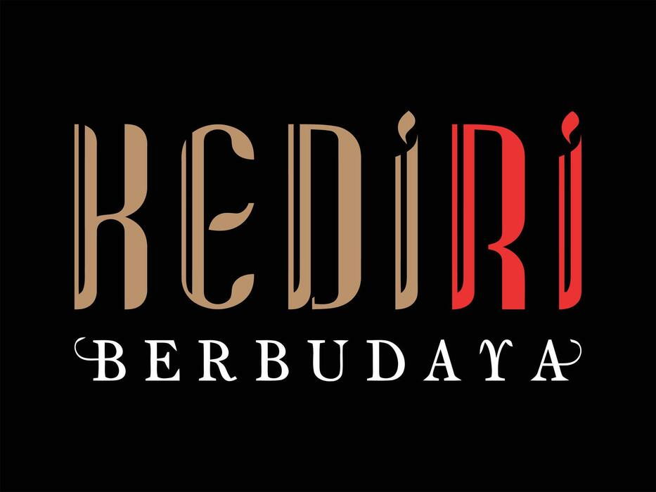

|
||||||||||||||||||||||||||||||||||||||||||||||||||||||||||||||||||||||||||||||||||||||||||||
|
Profil Kabupaten Tabel Destinasi Galeri Foto Tentang Pembuat Kategori Wisata
|
Profil Singkat Kabupaten KediriKabupaten Kediri merupakan salah satu kabupaten di Provinsi Jawa Timur yang memiliki keragaman kondisi geografis, sejarah, budaya, dan potensi pariwisata. Secara geografis, Kabupaten Kediri berada pada kisaran 7°36'12"–8°00'32" Lintang Selatan dan 111°47'05"–112°18'20" Bujur Timur. Wilayah ini berbatasan dengan Kabupaten Jombang dan Nganjuk di sebelah utara, Kabupaten Malang dan Jombang di sebelah timur, Kabupaten Blitar dan Tulungagung di sebelah selatan, serta Kabupaten Nganjuk dan Tulungagung di sebelah barat. Secara administratif, Kabupaten Kediri terdiri atas 26 kecamatan dengan 343 desa. Keragaman kondisi alam tersebut menghasilkan berbagai potensi pariwisata. Kabupaten Kediri memiliki wisata alam berupa kawasan pegunungan, kawah, air terjun, mata air, serta pemandangan alam. Selain itu, terdapat berbagai destinasi wisata budaya dan sejarah yang berkaitan dengan perkembangan Kediri sejak masa Kerajaan Kediri. Potensi tersebut menjadi bagian penting dari identitas dan daya tarik Kabupaten Kediri. Kabupaten Kediri juga memiliki wisata buatan dan edukatif, salah satunya Kampung Inggris Pare yang dikenal sebagai kawasan pembelajaran bahasa Inggris. Perpaduan antara wisata alam, budaya, sejarah, dan edukasi menjadikan Kabupaten Kediri memiliki potensi pariwisata yang beragam. Pengembangan potensi tersebut dapat mendukung kegiatan ekonomi masyarakat sekaligus memperkenalkan karakter dan kekayaan daerah kepada wisatawan.
Galeri Foto
Tentang Pembuat
|
|||||||||||||||||||||||||||||||||||||||||||||||||||||||||||||||||||||||||||||||||||||||||||
|
 Pemerintah Kabupaten Kediri Dinas Pariwisata & Kebudayaan Kompleks Museum Sri Aji Jayabaya, Jl. Totok Kerot, Desa Menang, Kecamatan Pagu, Kabupaten Kediri, Jawa Timur 64183 © 2026 - Dibuat oleh Choirul Ikhwanan untuk Hasil Praktikum Algoritma Pemrograman (HTML) |
||||||||||||||||||||||||||||||||||||||||||||||||||||||||||||||||||||||||||||||||||||||||||||